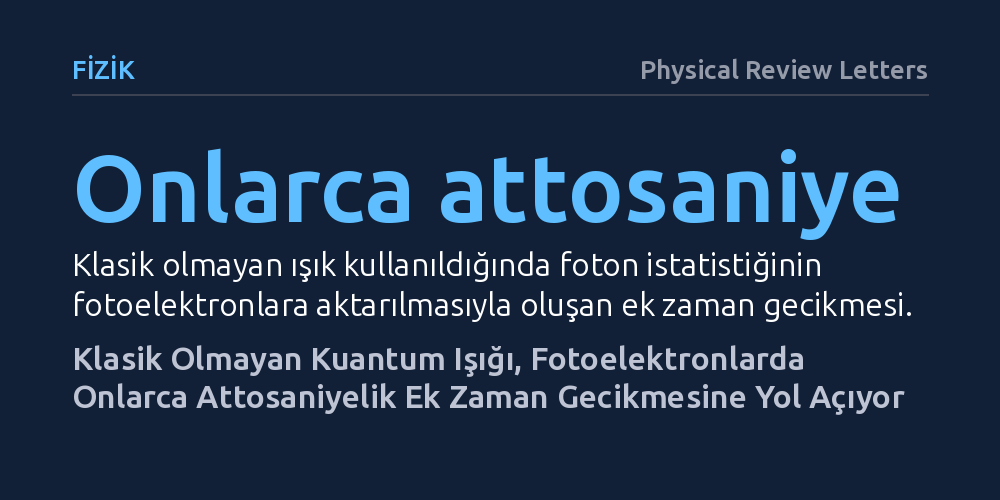

FIZIK · Physical Review Letters · 2026-10-14
Araştırmacılar, klasik olmayan kuantum ışığıyla tetiklenen iki fotonlu geçişlerin elektron yayılma sürelerini nasıl etkilediğini kuramsal olarak inceledi. Hesaplamalar, ışığın kuantum istatistiğinin fotoelektronlara aktarılarak ölçümlerde onlarca attosaniyelik ek bir zaman gecikmesine yol açtığını gösterdi.
Elektronların maddeden ayrılma sürelerindeki gecikmelerin yalnızca maddenin iç yapısından değil, ölçümde kullanılan ışığın kuantum özelliklerinden de kaynaklanabileceğini gösteriyor.

Bir atomun üzerine ışık düşürüldüğünde elektronların maddeden fırlaması, yani fotoelektrik olay, fiziğin en temel süreçlerinden biridir. Uzun yıllar boyunca bu fırlama sürecinin anlık gerçekleştiği varsayılmıştı; ancak günümüzün lazer teknolojileri sayesinde artık bu olayın saniyenin milyarda birinin milyarda biri, yani attosaniye ölçeğinde küçük bir zaman aldığı biliniyor. Fotoemisyon gecikmesi adı verilen bu süreyi ölçmek için araştırmacılar, iki fotonlu geçişlerin girişimine dayanan özel girişimölçüm tekniklerinden yararlanıyor.
Bugüne kadar yapılan standart ölçümlerde, süreci tetikleyen ve gözlemleyen lazer alanlarının klasik birer elektromanyetik dalga gibi davrandığı kabul ediliyordu. Ancak kuantum optiğindeki gelişmeler, ışığın tekil foton durumları gibi klasik fiziğin kurallarına uymayan kuantum hallerinde de üretilebileceğini gösterdi. Bu durum temel bir soruyu gündeme getirdi: Ölçümde klasik lazerler yerine kuantum ışığı kullanılırsa, elektronların salınma süreleri ve yapılan zaman ölçümleri bu ışıktan nasıl etkilenir?
Fizikçiler bu soruyu yanıtlamak amacıyla deneysel değil, kuramsal bir araştırma yürüttü. Klasik attosaniye kronoskopisinde yaygın olarak kullanılan ve iki fotonlu geçişlerin girişiminden faydalanan ölçüm protokolünü kuantum elektrodinamiği çerçevesinde baştan ele aldılar. Çalışmada, atomdan elektron koparan ana alanın yanı sıra süreci izleyen sonda ışık alanının klasik olmayan özel bir kuantum durumunda hazırlandığı varsayıldı.
Araştırmacılar, sonda alanının foton istatistiğinin elektronların süreklilik halleri arasındaki geçişlerine nasıl yansıdığını matematiksel olarak modelledi. İlk aşamada standart iki yan bantlı girişim deseni çözümlendi; ardından model, sistemin kuantum dalgalanmalarına karşı duyarlılığını test etmek üzere üç yan bantlı daha kapsamlı bir girişimölçer konfigürasyonuna genişletildi.
Hesaplamalar, sonda ışığının kuantum durumunun fotoelektronlar üzerinde doğrudan ölçülebilir bir iz bıraktığını ortaya koydu. Klasik olmayan ışığın sahip olduğu foton istatistiği, süreklilik-süreklilik geçişleri aracılığıyla elektronlara aktarılıyor ve ölçümlerde onlarca attosaniyelik ek bir zaman gecikmesi yaratıyor. Bu bulgu, ölçülen zaman kaymasının her zaman atomun kendi iç gecikmesini yansıtmadığını gösteriyor.
Araştırmacılar bu ek gecikmenin kaynağını sonda alanının ikinci dereceden anormal momenti ile ilişkili faz kaymasına bağladı. Üç yan bantlı düzeneğe geçildiğinde ise dördüncü dereceden anormal momentin de elde edilebildiği ve sistemin kuantum dalgalanmalarına karşı hassasiyetinin belirgin biçimde arttığı gösterildi. Makalede belirtildiği gibi, "fotoelektron girişimi, görünürdeki bir attosaniyelik zaman kayması aracılığıyla kuantum ışığının normalde gizli kalan özelliklerini açığa çıkarabiliyor."
Bu çalışmanın ortaya koyduğu sonuçlar iki temel açıdan önem taşıyor. İlk olarak, attosaniye ölçeğinde madde dinamiklerini inceleyen araştırmacıların, kullandıkları ışığın kuantum gürültüsünü ve foton istatistiğini hesaba katmaları gerektiğini hatırlatıyor; aksi halde ışıktan kaynaklanan onlarca attosaniyelik gecikmeler yanlışlıkla maddenin kendi özelliği sanılabilir.
İkinci olarak çalışma, bu etkiyi bir avantaja dönüştürme potansiyeli sunuyor. Fotoelektron girişimölçümü, klasik yöntemlerle saptanması zor olan kuantum ışığı durumlarını ve bunların faz bilgilerini doğrudan elektronlar üzerinden okuyan hassas bir ölçüm aracına dönüşebilir. Henüz kuramsal düzeyde olan bu yaklaşım, gelecekte attosaniye ölçeğinde zamana duyarlı kuantum metrolojisi geliştirmek için umut vadeden bir zemin hazırlıyor.